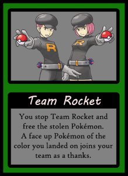
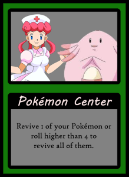
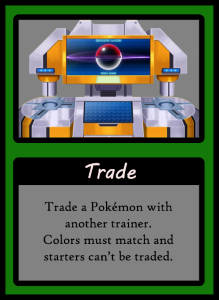
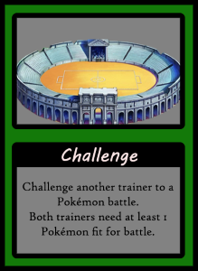
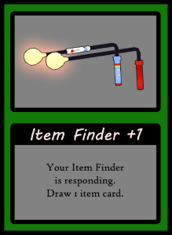
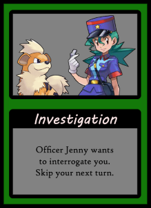
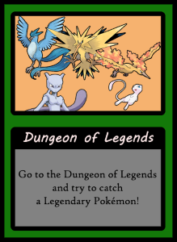

On your journey, you will encounter many events. But unlike item cards, event cards cannot be saved in a bag.
When you draw an event card, the event instantly happens. Here is a list of possible events:
|  |
- Team Rocket
-
You run into Team Rocket and free the Pokémon they have stolen. As thanks, one of those Pokémon joins your team.
Take any face up Pokémon on the field of the same color of the space you are standing on (no roll required).
If there are no possibilities for your color, it means Team Rocket got away and you get nothing.
|
|  |
- Pokémon Center
- Revive one of your Pokémon or roll higher than a 4 to revive all of them instead.
|
|  |
- TradeStarted
-
Give up one of your Pokémon and select an other trainer's Pokémon of the same color to get in return.
Starters cannot be traded. If there are no possible trades, this card becomes useless.
If the targeted trainer has a Poké Doll, the trade can be canceled.
|
|  |
- Challenge
-
Challenge an other trainer. The battle can only be stopped by a Poké Doll.
If you or all other trainers have no Pokémon fit for battle, this card becomes useless.
|
|  |
- Item Finder
- Your Item Finder notifies you that it has found some items. Draw the shown amount of item cards from the deck.
|
|  |
- Investigation
- Officer Jenny needs to interrogate you as part of an ongoing investigation. You won't be able to play on your next turn.
|
|  |
- Dungeon of Legends
-
You may pick one of the yellow chips in the Dungeon of Legends and try to catch it. The catching process is the same like for any other Pokémon, with the exception of Mew.
You can't use special balls when trying to catch Mew.
|